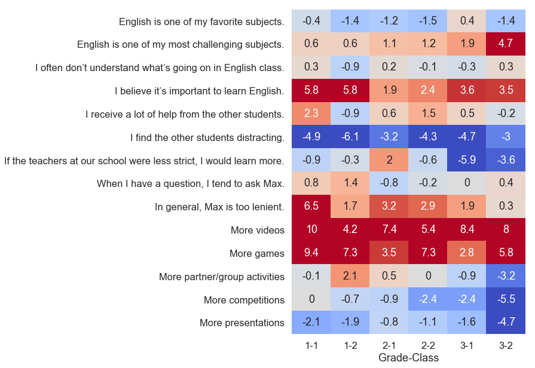
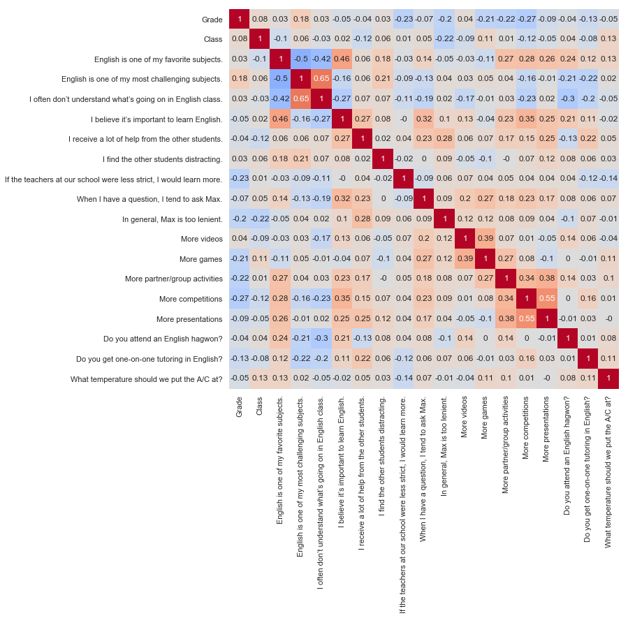
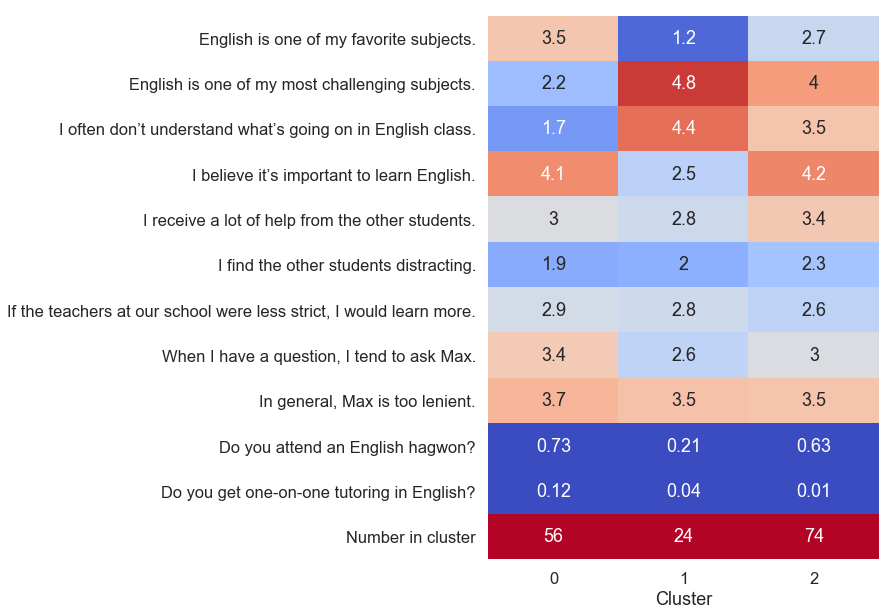

Max Kapur, August 2019
I teach English at a boys’ middle school here in Naju, South Korea. August in Korea is A/C season, and not a class goes by that I don’t have students going back and forth asking me to turn the A/C up and down. Someone always starts by setting it on full blast to the coldest temperature; once the room nears 17°C, someone will say, “Damn, it’s cold” and turn the machine all the way off … you can see where this is going.
As I began my second year of teaching, I decided to settle the A/C dispute once and for all by issuing my students a survey about the perfect classroom temperature. Oh, and I also asked them about their motivation for learning English, their opinions about our class and my teaching style, and what resources they were using to study English outside of class.
I’ve been studying math and stats in my free time here, and this felt like a good chance to whet my chops on some new data. If you poke around in the files below, you can get a sense for my process, but basically, I did all the analysis in Python, leaning heavily on the Pandas and Seaborn libraries.
Rather than write a traditional summary, I’ll just highlight the most important bits like this for those of you who are as tired as I am of staring at a screen all day.
Contents:
I’ll refrain from embedding the document because I don’t want Google to stalk you. You can get it here (to download a PDF) or here (to sell your soul).
The survey has nineteen questions. I wanted a high response rate, so I translated all the questions badly into Korean and talked the students through some of the trickier ones. I asked the students not to write their names on the surveys, again to encourage honest responses.
Many of the most helpful responses I received came from the optional fill-in-the-blank questions, but in this document I will focus on the quantitative data, with the hope that the techniques I used to analyze it will be of use to other teachers.
The first nine quantitative questions deal with what I would call “learning posture”: what the students’ strategy is for navigating English class and how well they feel it’s working. My students know that they are supposed to say learning English is important, but I was curious if they would do so on an anonymous survey (they didn’t) and if their motivation for learning English correlated with anything else, like how often they asked questions in class.
I asked the students a couple of questions about strictness because I know I am more lenient than the other teachers at our school. In one question, I asked if “teachers at our school” in general should be less strict to get a reference point, and then later asked if I am too lenient.
A group of five questions then asks the students what they want more or less of in our class: videos, games, competitions, and so on.
The students answered those first fourteen questions on a scale of strongly disagree (1) to strongly agree (5).
Next I asked the students two binary questions: whether they attended an after-school English tutoring center, and whether they received one-on-one tutoring in English. In the end, there were only a few students getting one-on-one tutoring, so I couldn’t learn much about that.
Finally, I asked them the most important question of all: What temperature should we put the A/C at?
I distributed and collected the surveys, 154 in total, during one class period. I made a note of which surveys came from which class sections, which gave me two more data points (grade and class) for each student. When entering the surveys into Excel, I disregarded nonsense responses, such as when a student answered every question with 3.
The most obvious thing to do, once we have all the data in a spreadsheet, is start taking averages and see what stands out. There’s a problem with just looking at averages, though: they tell us nothing about how the data is actually distributed. Compare these scenarios:
agree (4)neutral (3), another third answers agree (4), and the final third chooses strongly agree (5).In both cases the average is 4, but in the third case, the data isn’t as consistent. To quantify this uncertainty, I computed one-sample t-scores for each question’s average. The further the t-score gets from zero, the more confidently we can say that the “true” average (the average if you could interview an infinite number of students like mine) is not 3. A negative t-score means the true answer is likely lower than 3; positive, higher.
I’ve done something unusual in plotting the t-scores directly, instead of averages with error bars. I did this because there are risks inherent in interpreting error bars (or p-values) when you compute them for several samples. Better to just plot the t-scores and see what stands out. Thanks to people on Stack Overflow for helping me get the color map working.
More videos and more games—I saw that coming. Knowing the sometimes-militant style of my colleagues, I also expected the students to tell me I wasn’t being strict enough. I didn’t expect to hear that both I and the other teachers should be stricter (which is what the negative responses to If the teachers at our school were less strict, I would learn more mean, once you puzzle out the conditional).
Before we get into the other stuff, I’d like to break down these results by class, since the differences were pretty interesting:
These are t-scores again. There are two class sections in each grade, so six columns.
Let me tell you about class 3-2. They might be my favorite class. They’re slightly noisy and often tardy, but they tend to get into a nice rhythm if I supply them with a sufficiently interesting activity, and I never have trouble getting volunteers to speak. Moreover, they had the highest average scores on our speaking test last semester. That’s why I was surprised to see 3-2 agree so uniformly that English was one of their most challenging subjects.
Another interesting row is If the teachers at our school were less strict, I would learn more. Here we discovery very prominent differences between the classes that had been obscured when the data was aggregated together. Broken up like this, and knowing who the homeroom teacher is for each class, I can see that students’ assessments of the prototypical “teacher at our school” is informed heavily by who their homeroom teacher is. I’ll, um, leave it at that.
OK, stare at a neutral surface for thirty seconds before you look at this one.
I tried to get the labels on the bottom to sit at a 45° angle, but they got all clumpy and weird.
This chart shows how students’ responses to each question correlated with their responses to the other questions. For example, the r-value of -0.5 at the intersection of English is one of my favorite subjects and English is one of my most challenging subjects means that students who liked English a lot tended to disagree that it was challenging. There are at least three ways to interpret this:
When you hear pundits say “correlation is not causation,” this is what they are talking about. We have to tread carefully here, all the more so because computing 180 correlation coefficients is a mildly crappy statistical practice; at that scale, you’ll see some pretty decent correlations even in random data.
On the flip side, a low correlation coefficient doesn’t necessarily mean there’s no correlation. Virtually every student circled strongly agree (5) on More videos; since there’s little variance in the responses, there’s no way to “know” how a student who chose a different number might answer the other questions, and we get a row of r-values near zero.
Those caveats aside, there are a couple of things that stand out to me. One is the sixth column, which corresponds to I believe it’s important to learn English. Affirmative responses here are the best predictor of affirmative responses to When I have a question, I tend to ask Max, suggesting that students who ask a lot of questions do so out of intrinsic motivation rather than fear of failure (among other possible interpretations).
Another column I like is the third to last column, Do you attend an English hagwon?, which students answered with a simple yes or no. For those who don’t know, many Korean students attend private tutoring centers (hagwons) after the school day ends. A good English hagwon usually has smaller class sizes than school and one or more native speakers on hand. They tend to focus on vocabulary and standardized tests. There are hagwons in other subjects, too; a common strategy is to attend an English hagwon on Monday and Wednesday, a math hagwon on Tuesday and Thursday, and something “fun” like piano (cue music educators, cringing in the back) on Friday.
English hagwons seem to be working. Students who attend hagwons tended to enjoy English and find it less challenging than their peers. Since the hagwons my students attend don’t generally have a competitive application process, and since it’s usually the parents, not the students, who choose what subject of hagwon to send their kids to, I don’t think the positive correlations were merely a function of prior ability or interest, but you could test this further with a longitudinal study.
Are you ready for my favorite part?
One of the neatest statistical techniques I’ve learned about is called cluster analysis. Here, I’ve used a k-means clustering algorithm to sort the students into three groups with similar characteristics. I performed the clustering only on the subset of the questions that I felt reflected the students’ individual learning styles, omitting the responses about whether we should have more or less videos and so on.
This time, I am showing the averages instead of t-scores. Cluster analysis has divided the students into similar groups, which violates the t-test’s assumption of random sampling. Charting the t-scores would just add an unnecessary layer of abstraction.
In the chart above, the clusters are split into three columns, and we can summarize the results like this:
0 are crushing it. They like English, they think it’s important, and they usually understand what we’re doing in class. They are proactive in asking questions.1 are the most difficult to reach. Not only is English hard for them, but they also don’t think it’s important and are the least likely to ask questions. Mercifully, this is the smallest group.2 is really interesting. These are students who find English challenging and lean a lot on their peers to help them complete assignments. But they differ from cluster 1 in that they are motivated to learn English (they believe it is important). This group is the largest of the three, and its members would benefit greatly from asking more questions. It is the silent majority.Obviously, these are generalizations. Many students fall in the space between the various clusters. An inappropriate application of cluster analysis would be to partition the classroom into groups of students based on which cluster the algorithm assigned them to. We need to allow for the possibility that an individual student was misclassified or that his response changes over time.
You can choose any number of clusters when performing k-means clustering; I settled on three because expanding it to four just created another group very similar to cluster 0, while reducing it to two obscured the important differences between clusters 1 and 2.
So, I can’t just do what the students tell me to. At the very least, I’ll need my vice principal’s permission before I screen movies every day! (He might say yes. There is an elective class in film appreciation at our school.)
At the same time, it was important to me that the students knew that I had actually gone through the surveys, so the week after I collected them, I showed them these graphs and explained the most salient features. I also did a “write-ins that made me laugh" slide where I showcased some of the funny answers to Is there anything else you’d like Max to know? There were some real gems:
After sharing these responses with the students, I distilled the above graphs into a few general takeaways. I explained that we’d still have to wait until the end of the semester to watch a full-length movie, but we can do more TED talks and music videos in regular class. I had them brainstorm ideas for speaking practice that don’t involve presentations and partner activities.
I showed the students the cluster analysis and asked them to think to themselves about which of the groups they fall into—or if perhaps they were none of the three. A couple of kids proudly raised their hands and say, “I’m cluster one, all the way.” I can only applaud their honesty. Others, when I described cluster 2 and emphasized that it included nearly half the students, looked visibly relieved.
The greatest benefit of this analysis was to my lesson planning. Without realizing it, prior to this survey, I’d been planning my lessons around the assumption that there are students who are motivated and skilled, and students who are unmotivated and unskilled. That is, I was thinking only about clusters 0 (the nerds) and 1 (the disinterested), evaluating each potential activity on the challenging/interesting spectrum and trying to include a mix of both ends. This approach neglected the largest group of students, cluster 2, who expressed both interest and challenge in English, defying my assumption that the best way to reach disengaged students was with highly accessible, “fun” content. Instead, the data suggested that practical, minimal-frills material with lots of scaffolding will yield positive results in classrooms like mine.
But what you really wanted to know was the verdict on the A/C temperature, huh? I used my very favorite measure of central tendency for this one, the 10% trimmed mean.
20.87264150943396
No more and no less.
{kind=link}